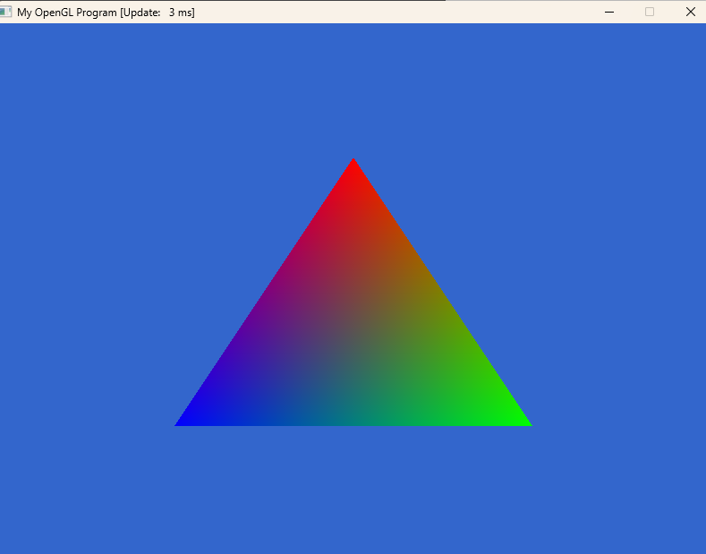
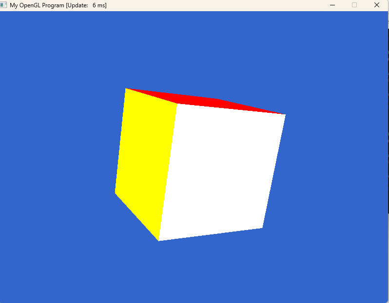
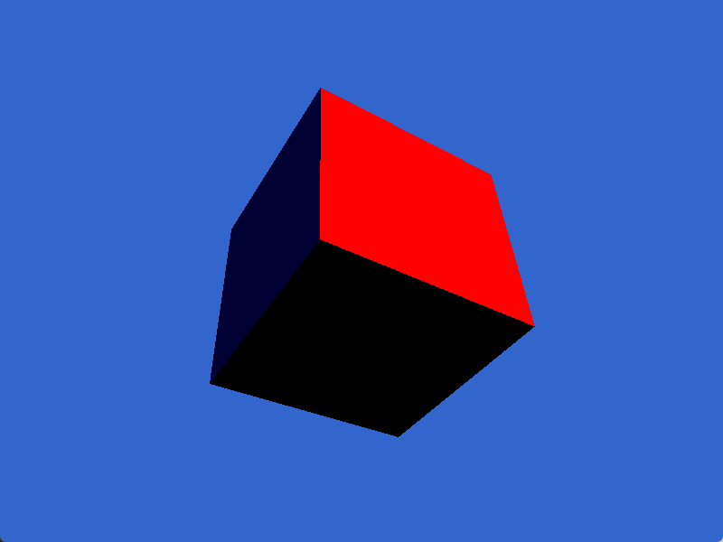
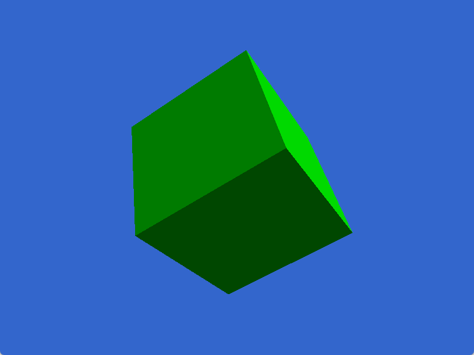

This page shows my work for HW4. I ran all the demos and took screenshots, and then answered the questions.
This demo draws a simple colored triangle.
This one shows a rotating 3D cube with a perspective view.
This cube has basic lighting added, so you can see bright and dark sides.
This is the model loaded from the models folder (default cube).
If I remove the depth test, OpenGL stops checking which surface is closer. Faces are drawn only in drawing order. Because of that, the cube looks wrong: some back faces show up in front.
I added one more key check in the event loop, so when the program sees the Q key, it sets the quit flag to true. Pressing ESC or Q now closes the window.
I changed the light direction so the Y value became negative instead of positive. This makes the light shine upward instead of downward.
I made a new file called triangle.txt. It has one big triangle. The format matches the cube model: 8 floats per vertex (position, UV, normal).
Contents of triangle.txt:
24 0.0 1.0 0.0 0.0 1.0 1.0 0.0 0.0 0.0 -1.0 -1.0 0.0 0.0 1.0 0.0 0.0 0.0 -1.0 1.0 1.0 0.0 1.0 0.0 0.0
Then I changed the file name in ModelLoad.cpp from cube.txt to triangle.txt. After rebuilding, the program shows the large triangle.
In this homework I practiced running basic OpenGL demos using SDL3. I tried several small programs, changed a few things like the light direction and the key inputs, and also loaded my own model. Overall, this assignment helped me get more comfortable with how the OpenGL pipeline works.